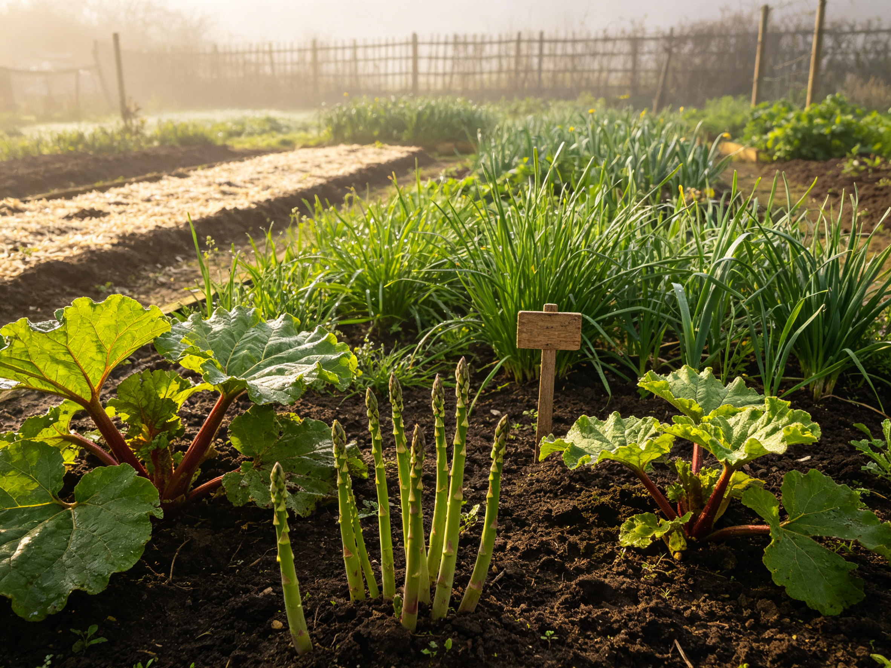

Perennial Vegetables: The Plant-Once-Harvest-Forever Garden Bed
Most vegetables are annuals: sow, harvest, repeat forever. Perennials flip the script — you plant them once, and they come back bigger every spring for a decade or more. Less digging, less buying seeds, and an earlier harvest than anything you sow fresh. Here's how to build a bed that pays you back year after year.
Why Every Garden Should Have a Perennial Corner
Perennial vegetables are the quiet workhorses of the garden. They build deep root systems that improve soil instead of exhausting it, shrug off drought better than shallow-rooted annuals, and often emerge before the last frost — asparagus and rhubarb are among the first edible harvests of the year. For anyone who finds themselves re-digging the same beds every spring, a permanent bed is a small rebellion against the annual cycle.
The Starter Five: Easiest Perennial Vegetables
Asparagus
The classic. Crowns take 2-3 years to establish, but then produce for 15-20 years. Plant crowns in a deep, well-drained trench in early spring, and resist harvesting for the first two seasons — that patience pays off in decades of thick spears.
Rhubarb
Virtually indestructible, rhubarb loves cool climates and rich soil. Plant one or two crowns and you'll have more stalks than you can use. Harvest stalks by pulling, never cutting; and remember the leaves are toxic — compost them, don't eat them.
Perennial onions and chives
Egyptian walking onions, potato onions, and common chives come back forever and multiply on their own. They're the easiest entry point — a single clump of chives can feed a family for years.
Sorrel
A tangy, lemony green that salads and soups love. It shrugs off neglect, self-seeds politely, and produces from early spring to frost.
Good King Henry
An old European green that's making a comeback — tastes like spinach, needs almost no care, and handles partial shade better than most.
Designing the Bed: Location Is Everything
Because perennials stay put for years, the bed is a commitment — get it right the first time. Choose a sunny spot with good drainage and enough room to grow. A dedicated bed of 4×8 feet holds a solid starter collection: two asparagus trenches, two rhubarb crowns, and a border of chives and sorrel. If you're already gardening in raised beds, perennials are the best candidates for a deeper bed — their roots run deep and don't like being disturbed.
Soil Prep: The No-Dig Advantage
Perennials hate root disturbance, which makes them perfect partners for no-till gardening. Build the bed with layered compost and mulch — the same approach we cover in our no-till guide — and you'll never dig the bed again. Amend generously before planting: this soil has to feed the same plants for years, so a thick layer of compost at planting time is an investment, not a luxury.
A Year in the Life of the Bed
- Early spring — chives and sorrel emerge first; harvest asparagus once spears are thick enough (first real harvest in year 3).
- Mid-spring — rhubarb ready in batches; pull stalks, feed the bed with a compost top-dress.
- Summer — let plants build energy; water deeply in dry spells, mulch to hold moisture.
- Fall — cut back spent foliage (except asparagus, which should be left to brown and feed next year's crowns).
- Winter — top-dress with compost and let frost do its work; the bed sleeps and comes back stronger.
Propagating: Free Plants Forever
After a few years, most perennials need dividing — and that's a gift. Divide rhubarb crowns and chive clumps in early spring or fall, replant the extras, and give them away. Save seeds from sorrel and Good King Henry, and you've closed the loop: one small purchase becomes a permanent, self-replenishing food source.
Mistakes Beginners Make
- Harvesting too early — asparagus and rhubarb need their first seasons to establish. Patience is the entire game.
- Digging around the bed — never cultivate perennial roots; weeds get pulled by hand or smothered with mulch.
- Planting in a spot you'll want to move — the bed is permanent, so plan around future shade from trees or buildings.
- Forgetting to feed — an annual compost top-dress in fall or early spring keeps the bed productive for decades.
Perennials won't replace your tomatoes and lettuce — but they're the foundation of a garden that feeds you earlier, with less work, every single year. Start with one chive clump or one rhubarb crown this season, and let the bed grow with you.